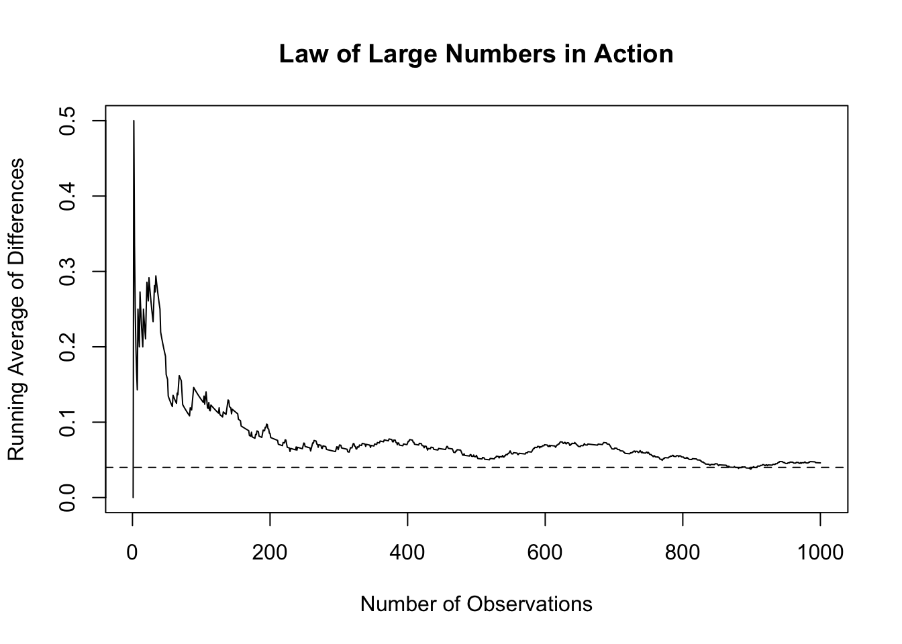
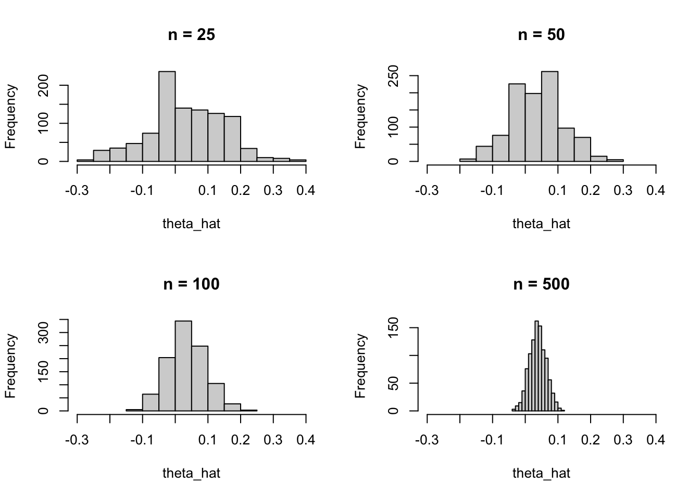

[1] 0.218[1] 0.172[1] 0.046Simulating Key Ideas from Classical Frequentist Statistics
Fei Qin
today
Suppose I run a website with a landing page where visitors can sign up for a newsletter. I want to know whether changing the call-to-action text can increase the sign-up rate. To study this, I compare two versions of the message. CTA A says “Sign up for our newsletter here!” and CTA B says “Stay up to date by signing up!”
This question can be studied with an A/B test. Visitors are randomly assigned to see one of the two messages, and I compare the proportion of visitors who sign up in each group. The goal is to determine whether one CTA performs better than the other and to use this example to illustrate several core ideas from frequentist statistical inference.
From a statistical point of view, each visitor produces a binary outcome: either they sign up for the newsletter or they do not. This means each observation can be modeled as a Bernoulli random variable, where success means signing up.
Because the CTA may affect behavior, I allow the sign-up probability to differ across groups. Let pi_A be the probability of signing up for visitors who see CTA A, and let pi_B be the probability of signing up for visitors who see CTA B. The quantity of interest is theta = pi_A - pi_B, the difference in sign-up rates between the two groups.
I estimate this parameter using the difference in sample means: theta_hat = Xbar_A - Xbar_B. Because each observation is either 0 or 1, the sample mean is simply the sample proportion. In other words, the A/B test becomes a problem of estimating and making inferences about the difference between two Bernoulli proportions.
In a real A/B test, the true sign-up probabilities would be unknown. However, in a simulation study I am allowed to choose those probabilities myself so that I can compare my estimates to the truth. For this exercise, I set pi_A = 0.22 and pi_B = 0.18, so the true difference is theta = 0.04.
I then simulate 1,000 visitors in each group. For each visitor, the outcome is binary: a value of 1 means the visitor signed up, and a value of 0 means the visitor did not sign up. These simulated data will be used throughout the rest of the analysis.
[1] 0.218[1] 0.172[1] 0.046Because the data are simulated, the estimated difference will usually not be exactly equal to 0.04 in any one sample. That gap reflects ordinary sampling variability, which is one of the main ideas studied in frequentist inference.
The Law of Large Numbers says that as the sample size grows, the sample mean gets closer to the population mean. In this A/B testing setting, that idea matters because my estimator of interest is the difference in sample means, theta_hat. As the number of observations increases, I expect this estimate to move closer to the true difference in sign-up rates.
To illustrate this, I compute the element-wise differences between the A-group and B-group observations and then track the cumulative average of those differences as the sample size increases. If the Law of Large Numbers is working as expected, the running average should become more stable and approach the true value of 0.04.

At the beginning of the plot, the running average is quite noisy because it is based on only a few observations. As more data accumulate, the estimate becomes more stable and settles near the true value of 0.04. This is exactly the pattern predicted by the Law of Large Numbers and gives me confidence that large samples help produce reliable estimates.
Once I have a point estimate, the next question is how precise that estimate is. A point estimate alone does not tell me how much uncertainty surrounds it, so I also need a standard error and a confidence interval.
One useful way to estimate uncertainty is the bootstrap. The bootstrap repeatedly resamples from the observed data, with replacement, and recalculates the statistic of interest each time. The variability of those resampled statistics gives an estimate of the standard error.
[1] 0.01683919[1] 0.01768875[1] 0.01299518[1] 0.07900482The bootstrapped standard error is very close to the analytical standard error, which is reassuring. Both methods suggest a similar level of uncertainty around the estimated treatment effect. Using the bootstrapped standard error, I construct a 95 percent confidence interval for theta. In this sample, that interval does not include zero, which suggests that CTA A performs better than CTA B. More broadly, this section shows that the bootstrap is a practical way to quantify uncertainty even when I do not want to rely entirely on a closed-form formula.
The Central Limit Theorem says that as the sample size grows, the sampling distribution of the sample mean becomes approximately Normal, regardless of the shape of the underlying population distribution. Since my estimator theta_hat is a difference in sample means, the same idea applies here as well.
To demonstrate this, I repeatedly simulate theta_hat for sample sizes n = 25, 50, 100, and 500. For each sample size, I generate 1,000 estimates and plot a histogram of the results.

At small sample sizes, the histograms look somewhat rough and irregular. As the sample size increases, the distribution of theta_hat becomes smoother and more bell-shaped. This is the Central Limit Theorem in action: even though each individual observation is Bernoulli, the distribution of the estimator becomes approximately Normal when the sample is large enough.
Now that the Central Limit Theorem gives approximate Normality for large samples, I can use that result to perform a formal hypothesis test.
The null hypothesis is H0: theta = 0, which says the two CTAs generate the same sign-up rate. The alternative hypothesis is H1: theta is not equal to 0.
The idea of a hypothesis test is to ask whether the observed estimate is far enough from what I would expect under the null that I would be willing to reject H0.
To do this, I standardize the estimate using its standard error. The test statistic is z = theta_hat divided by SE(theta_hat). By the Central Limit Theorem, theta_hat is approximately Normal for large samples. Under the null, its mean is 0. Dividing by its standard error gives a statistic that is approximately standard Normal under H0, which lets me compute a p-value.
Although this is often loosely called a t-test, it is closer in spirit to a z-test. The classical t-test relies on Normal data and an exact t-distribution result. Here the data are Bernoulli, so there is no exact t-distribution theorem. Instead, approximate Normality comes from the Central Limit Theorem. In large samples the difference between using the Normal and t distributions is negligible, but the logic behind the approximation is still important.
[1] 2.600522[1] 0.009308194The test statistic is large in magnitude and the p-value is small, so I would reject the null hypothesis that the two CTAs perform equally. In this simulated sample, the evidence suggests that CTA A produces a higher sign-up rate than CTA B.
The two-sample test above is mathematically equivalent to a simple linear regression. This connection is useful because regression tools generalize naturally to more complicated experimental settings.
To show the equivalence, I stack the two groups into a single dataset. The outcome Y_i equals 1 if the visitor signed up and 0 otherwise. The indicator D_i equals 1 if the visitor saw CTA A and 0 if the visitor saw CTA B. I then estimate the regression:
Y_i = beta_0 + beta_1 * D_i + epsilon_i
In this regression, beta_0 is the mean outcome in group B, so it estimates pi_B. The sum beta_0 + beta_1 is the mean outcome in group A, so it estimates pi_A. Therefore beta_1 = pi_A - pi_B = theta, and the OLS estimate of beta_1 should match the difference in sample means.
Estimate Std. Error t value Pr(>|t|)
(Intercept) 0.172 0.0125141 13.744500 3.842909e-41
D 0.046 0.0176976 2.599222 9.412306e-03The regression coefficient on D is numerically identical to the difference in sample means from the earlier analysis. Its standard error, t-statistic, and p-value are also very similar to the values from the two-sample test. This equivalence matters because regression gives a flexible framework for extending the same logic to settings with controls, interactions, or multiple treatments.
A final issue in A/B testing is peeking. Suppose my boss does not want to wait until all 1,000 visitors per group have been collected. Instead, she wants to test for significance after every 100 observations per group and stop early if any test rejects at the 5 percent level.
This is problematic in classical frequentist inference because each additional look at the data creates another chance for a false positive. A single test at alpha = 0.05 has a 5 percent Type I error rate, but repeated testing on accumulating data pushes the overall false positive rate above 5 percent.
To demonstrate this, I simulate a world in which the null hypothesis is true, so pi_A = pi_B = 0.20. I then simulate 10,000 experiments, checking significance after every 100 observations per group. I record whether any peek in a given experiment produces a p-value below 0.05.
[1] 0.1983The resulting proportion is the empirical false positive rate under peeking. It is noticeably larger than 0.05, showing that repeated looks at the data inflate the Type I error rate. In practice, this means that stopping an experiment the first time a result looks significant can lead to too many false discoveries. That is why formal sequential methods or pre-committed stopping rules are important in real A/B testing.